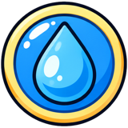

WaterTap a stage to read its story.
Floecalf is a round, smooth-furred seal pup the colour of pale sky-blue with large dark eyes and swirl markings across its plump belly. It flops cheerfully through the shallower parts of the Poison Marsh, immune to the foul water, slapping the surface with its flippers to make the biggest splash possible. It has no concept of stealth and announces its arrival everywhere. Young guardians who found it near the old canal-banks named it 'Floecalf' for the cold trail it leaves in the water - a brief icy sheen that melts in minutes.
Field note: A Floecalf's belly-flop splash clears toxin from a one-metre radius of marsh water temporarily.
Poison Marsh. Floecalf and its family are found in the Poison Marsh. See everyone who lives there.
Share a Bond Food that matches its types to become friends. Floecalf loves:
A Bond Food is not a trick. It joins your spirit with the Kimuro's spirit, and only when it chooses you.
Print the Kimuro adventure packs: mazes, cards, a board game and Bond Mark medals.
See the printable packs